Ciało Czuje - Strefa Masażu Martyna Liżewska
Moje masaże są przestrzenią, w której ciało może wrócić do równowagi, odetchnąć i poczuć się zaopiekowane.
Każda sesja jest prowadzona uważnie i dostosowana do tego, czego w danym momencie potrzebujesz. Pracuję spokojnie, uważnie i ciałoczuło – tak, aby każda sesja przynosiła odprężenie, błogość i poczucie spokoju.
Podczas masaży korzystam z różnych technik pracy z ciałem oraz z aromaterapii. Olejek dobierany jest indywidualnie, zgodnie z Twoim samopoczuciem i potrzebami, aby zapach mógł dodatkowo wesprzeć proces relaksu i regulacji układu nerwowego.
Proszę o przyjście dokładnie na umówioną godzinę, dzięki temu mogę spokojnie przygotować przestrzeń na Twoją sesję.
Czego możesz oczekiwać?
- całkowitego zaopiekowania
- masażu ciała na wysokim poziomie
- masażu holistycznego indywidualnie dobranego do Twoich potrzeb
- rozmowy przed rozpoczęciem masażu ciała
- ciepłej herbaty
- dobrej, przyjaznej i domowej atmosfery w strefie masażu
To, co chcę Tobie zaproponować, to nie tylko masaż ciała. To czas tylko dla Ciebie, Twój czas ze sobą. To zwiększanie świadomości ciała poprzez masaż holistyczny. Przy tym dobra i bezpieczna atmosfera, w której możesz odpuścić wszelkie troski dnia codziennego, wyjść zregenerowanym, pełnym energii, totalnie rozluźnionym.
Lokalizacja również nie jest przypadkowa. Piękna, zabytkowa kamienica przy alei Warszawskiej 41, to świetne miejsce na masaż w samym sercu Olsztyna. Niedaleko znajduje się duży parking, starówka, restauracje.
Masaż holistyczny
Jest to podejście do masażu ciała, które uwzględnia całość człowieka: fizyczne, emocjonalne, psychiczne i duchowe aspekty. Koncentruje się na równowadze i harmonii między ciałem umysłem i duchem, stosując różnorodne techniki masażu ciała w celu promowania ogólnego dobrego samopoczucia i zdrowia.
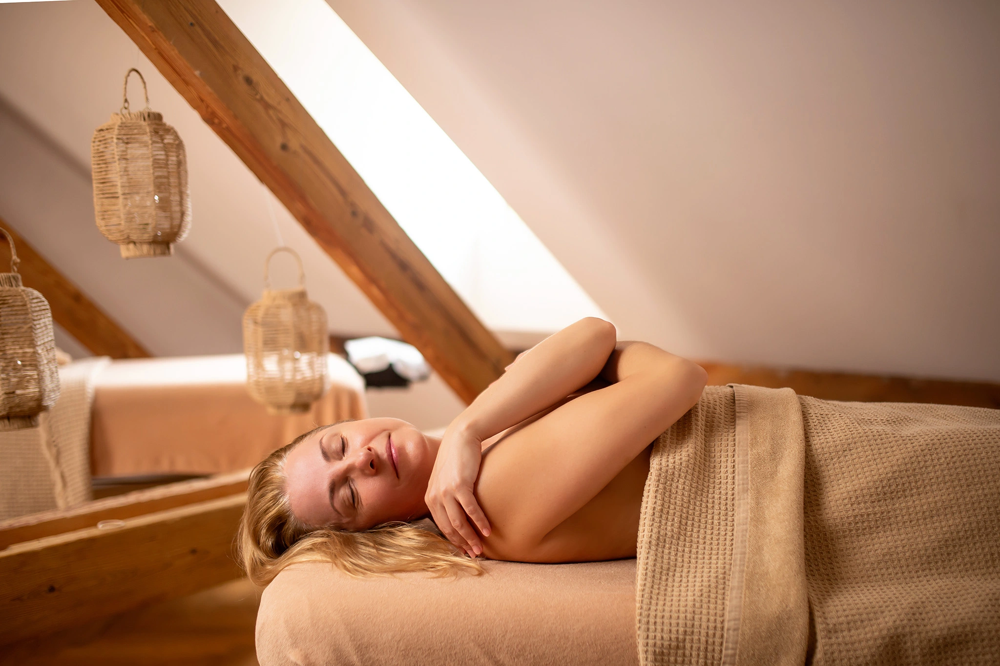
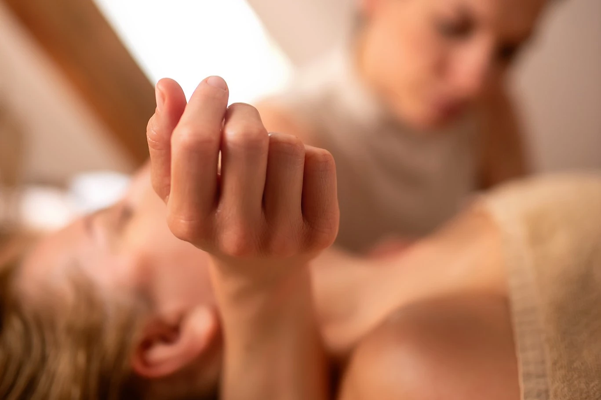
Jak się przygotować do masażu ciała?
- Nie jedz obfitego posiłku przed samym masażem ciała
- Najlepiej zjeść coś lekkiego około 2 godziny przed masażem ciała
- Ubierz się wygodnie, aby łatwo Ci się było ubrać gdy będziesz mieć naolejowane ciało po masażu holistycznym
- Jeśli czujesz potrzebę odświeżenia się przed masażem ciała, zrób to w domu. W mojej strefie masażu nie ma prysznica
- Zastanów się czego Ci potrzeba, gdzie czujesz największe napięcia, jaki cel chcesz osiągnąć po masażu ciała
- Jeśli borykasz się z problemami zdrowotnymi, zabierz najświeższe wyniki badań obrazowych, aby wykluczyć przeciwwskazania do masażu ciała lub dobrać odpowiednie techniki masażu holistycznego
Jak umówić się na masaż?
Najlepiej pisząc SMS lub wiadomość na what up/ instagram/ facebook.
Nie odbieram telefonów podczas masażu. Odpisuję, oddzwaniam najszybciej jak to możliwe.
Vouchery
W mojej strefie masażu jest możliwość wykupienia vouchera, zapakowanego w ozdobną kopertę, gotowego do wręczenia lub w formie elektronicznej przesłanej mailowo.
Obowiązują je takie same ceny i promocje jak w przypadku innych masaży holistycznych z oferty.
Voucher ważny jest przez 3 miesiące od daty zakupu.
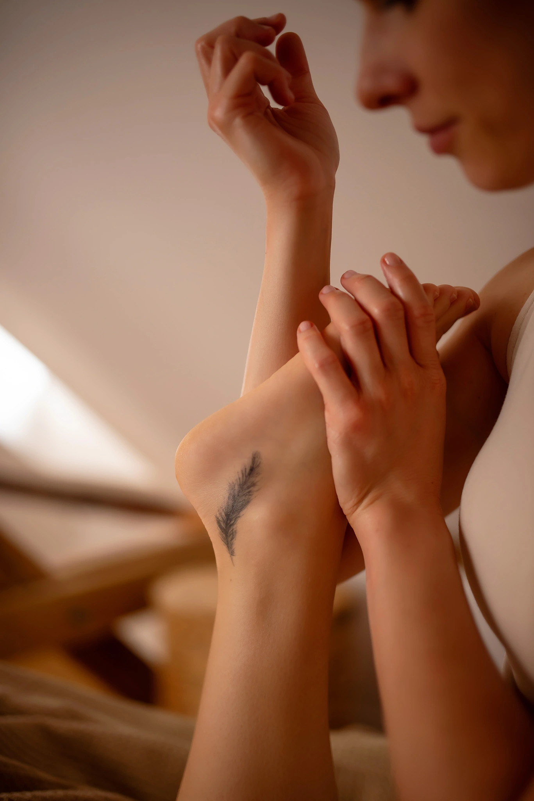
Na jakich produktach pracuję?
Wybieram tylko te naturalne, z prostym składem. Ważne jest też dla mnie korzystanie z polskich marek.
Aktualnie do masażu ciała stosuje czysty olej migdałowy, w którym rozpuszczam skoncentrowane oleje eteryczne wysokiej jakości, tak aby poprzez aromaterapię działać nie tylko na zmysł węchu, ale i nieść szereg korzyści wynikających z działania danego olejku, dobranego również indywidualnie do Twoich potrzeb, co świetnie wpisuje się w ideę masażu holistycznego.

Strefa masażu Martyna Liżewska
O MNIE
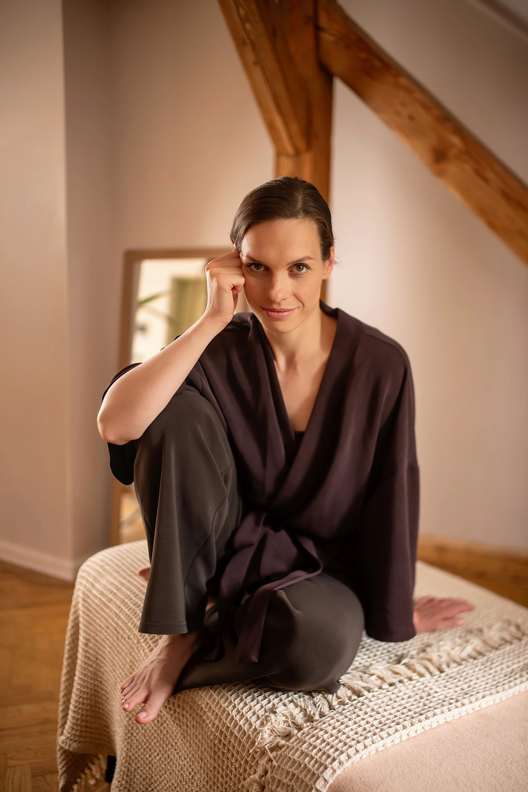
Mam na imię Martyna, praca z Ciałem to moja pasja. Z tego powodu zdecydowałam się na studia na kierunku Fizjoterapia. Po nich zajęłam się pracą typowo kliniczną, leczniczą. Pracowałam w centrum medyczno-rehabilitacyjnym oraz zakładzie opiekuńczo-leczniczym. Zmęczyło mnie jednak ograniczenie czasowe i brak narzędzi aby w pełni móc pomagać. Przez przypadek (lub i nie, bo przecież przypadków nie ma) trafiłam do Art SPA w Zamku Topacz pod Wrocławiem, gdzie masaż był czymś więcej niż pracą manualną na poziomie mięśni. Moje serducho od razu poczuło ten klimat i zakochałam się w takiej formie pracy z ciałem człowieka. Od tamtej pory rozwijam się w tym kierunku, bo widzę jak ogromny potencjał ma odpoczynek połączony z odpowiednią pracą na tkankach. Jak bardzo to, co dzieje się w ciele, połączone jest z emocjami. Dużo lepsze efekty można uzyskać łącząc rozluźnienie nie tylko mięśni, ale i „ducha”. Swoje doświadczenie przenoszę i rozwijam również w Camp Spa Włodowo. Całość podkręcam przez nieustający rozwój, między innymi szkoleniami z: masażu balijskiego, tkanek głębokich, funkcyjnego, poprzecznego czy pracy ze stawem skroniowo-żuchwowym. W planie mam dużo więcej.
W zrozumieniu i poznaniu ludzkiego ciała pomogły mi nie tylko studia, które dały mi przede wszystkim wiedzę merytoryczną i solidne podstawy anatomii, ale również moja inna pasja - taniec. Tańczyłam od zawsze, różne style. Na dłużej zatrzymał mnie taniec współczesny i teatr tańca. Teraz łączę wiedzę, pasję i podejście do człowieka z szacunkiem na jaki zasługuje.
Zapraszam do obserwowania mojego profilu na Facebooku. Znajdziecie tam treści nie tylko dotyczące moich usług. Będę też dzielić się wiedzą z zakresu szeroko pojętego zdrowia, dbania o siebie i psychosomatyki, czyli emocji i ich wpływie na nasze ciała.
Strefa masażu Martyna Liżewska
ZDJĘCIA
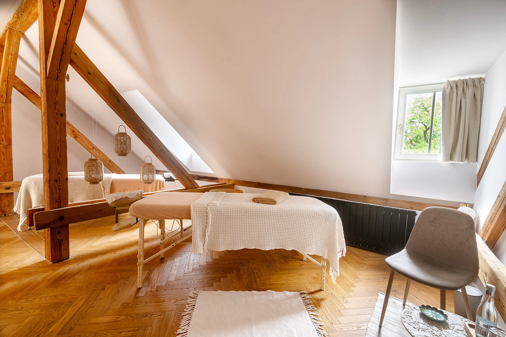

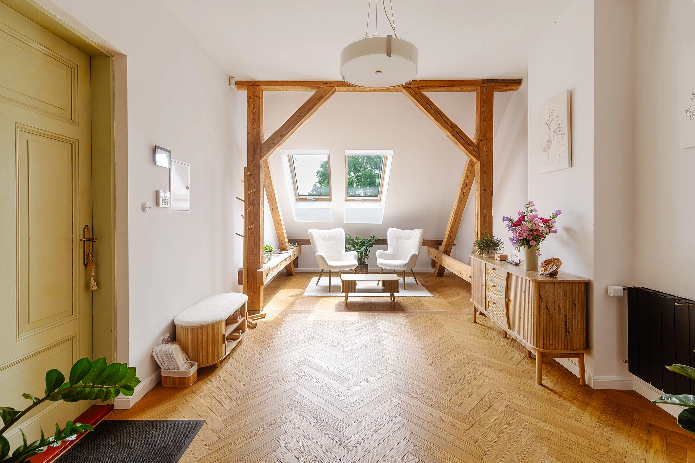
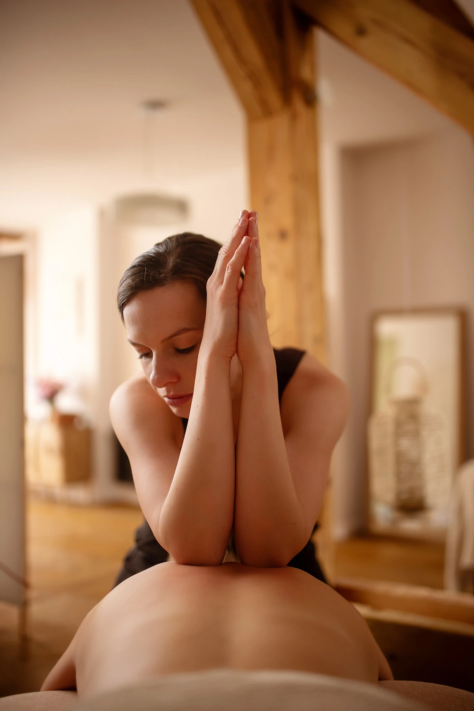
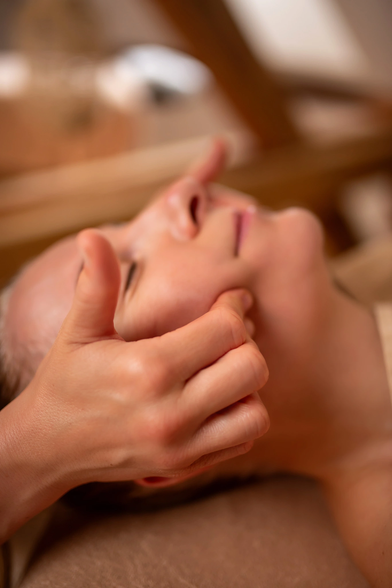
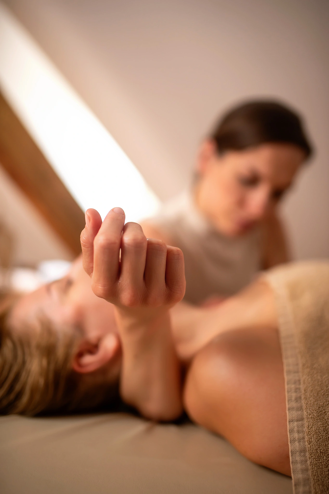
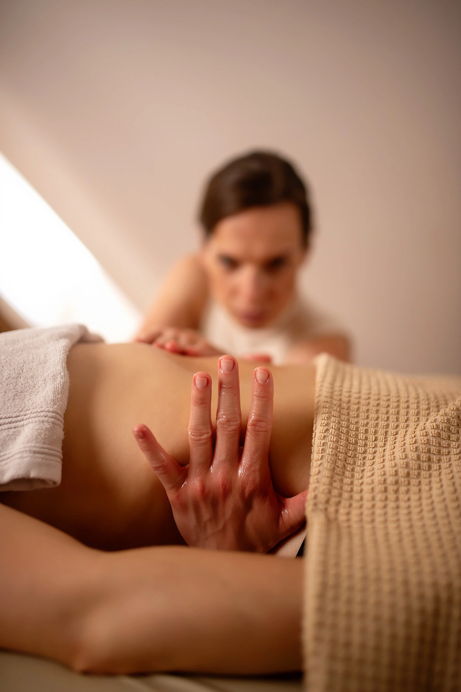
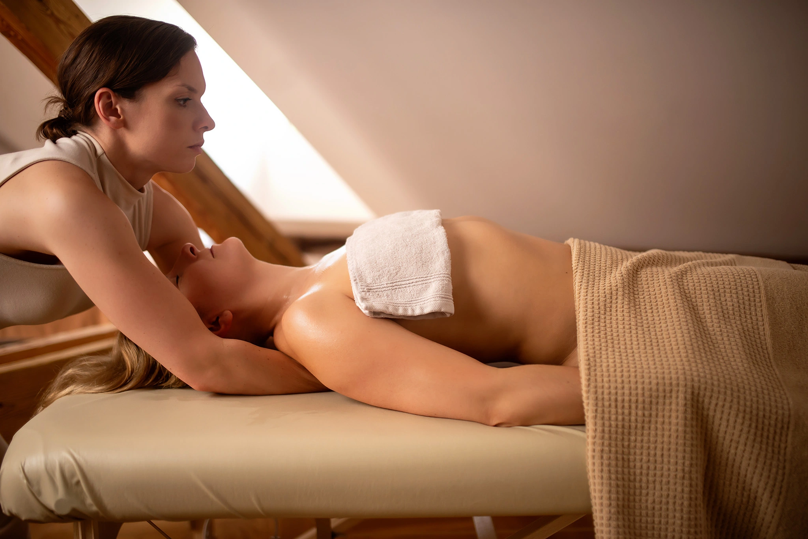
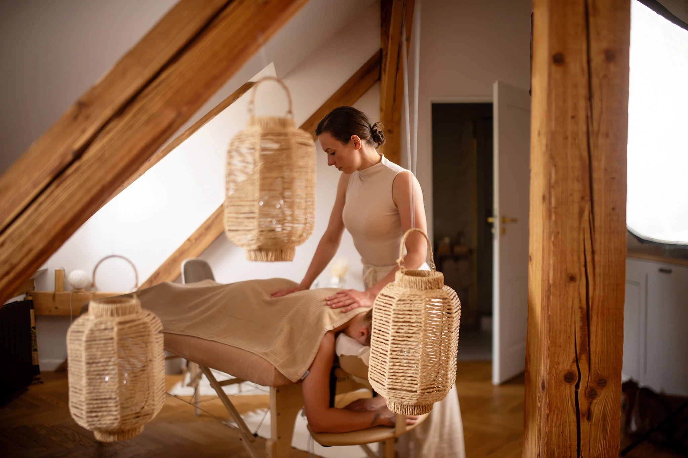
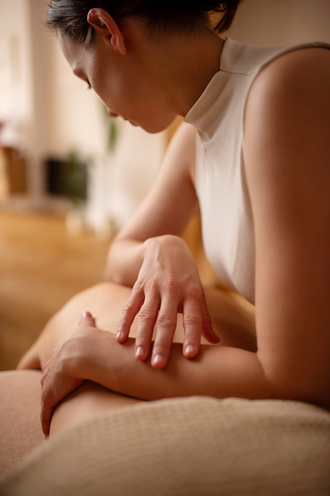
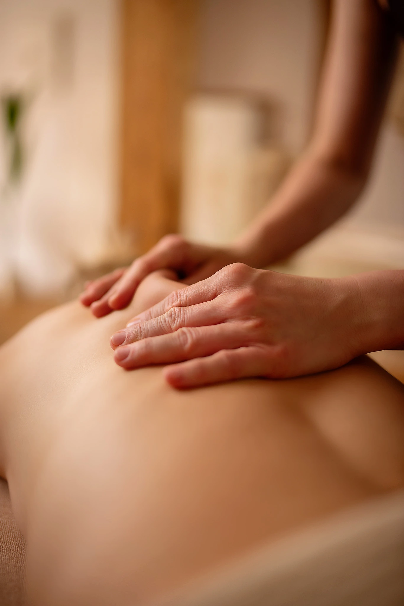

Strefa masażu Martyna Liżewska
OFERTA
Rytuały ciałoczułe
Otulenie
To rytuał, który pozwala ciału naprawdę odpuścić napięcia i poczuć się bezpiecznie. Wiele osób po tej sesji mówi, że czuło się dokładnie tak – jakby ktoś je otulił spokojem.
Masaż wykonywany jest na prześcieradle olejoodpornym, co pozwala na płynną, miękką pracę z całym ciałem.
Ruchy są długie, rytmiczne i harmonijne, dzięki czemu ciało stopniowo wchodzi w stan głębokiego relaksu.
Podczas rytuału pracuję z całym ciałem: plecami, rękami, nogami, brzuchem, głową i twarzą.
Elementy inspirowane pracą Lomi Lomi sprawiają, że masaż ma bardzo otulający charakter.
Podczas sesji pojawia się również element pracy z dźwiękiem – misa tybetańska, która pomaga jeszcze bardziej wyciszyć ciało i umysł.
To masaż szczególnie polecany, gdy:
- czujesz duże zmęczenie
- masz dużo stresu i napięcia
- potrzebujesz zatrzymać się i zadbać o siebie
90, 120 min
Lekkość
To spokojny, regenerujący rytuał skupiony na górnej części ciała, twarzy i układzie nerwowym.
Ciało przez większość sesji pozostaje w jednej pozycji, dzięki czemu nie trzeba się przekręcać, a relaks może być jeszcze głębszy.
Masaż obejmuje plecy (z płynnymi przejściami pod ciało), obręcz barkową, ręce, szyję, głowę oraz twarz.
Podczas sesji pojawia się również element pracy z dźwiękiem – misa tybetańska, która pomaga jeszcze bardziej wyciszyć ciało i umysł.
Ten rytuał jest szczególnie wspierający, gdy:
- czujesz napięcie w karku i barkach
- masz zmęczoną głowę
- potrzebujesz wyciszenia i regeneracji
60 min
Powrót do równowagi
Spokój
Najbardziej klasyczny masaż relaksacyjny w mojej ofercie. To spokojna, płynna praca z ciałem, która pomaga wyciszyć układ nerwowy i stopniowo rozluźnić napięcia.
Podczas masażu wykorzystuję długie, harmonijne ruchy, które pozwalają ciału zwolnić tempo i wejść w stan głębokiego odprężenia.
Sesję uzupełnia relaksujący masaż głowy, który pomaga jeszcze bardziej poczuć spokój w całym ciele.
To dobry wybór, jeśli:
- czujesz przebodźcowanie
- masz dużo stresu
- potrzebujesz się zatrzymać i odetchnąć
- chcesz po prostu odpocząć
60, 90, 120 min
Luz w mięśniach
Masaż skoncentrowany na miejscach, w których ciało gromadzi napięcia i zmęczenie.
Pracuję wolniej i głębiej w obszarach przeciążonych, tak aby mięśnie mogły się rozluźnić, a ciało odzyskało większą swobodę ruchu.
Techniki są dopasowywane do tego, gdzie ciało najbardziej potrzebuje uwagi.
Ten masaż szczególnie dobrze sprawdza się, gdy:
- dużo pracujesz przy komputerze
- odczuwasz napięcie w plecach, karku lub barkach
- Twoje ciało jest zmęczone lub przeciążone
- potrzebujesz regeneracji
60, 90 min
Energia
To masaż o bardziej dynamicznym charakterze, który pobudza ciało i krążenie.
Wykorzystuję intensywniejsze rozcieranie oraz rytmiczne ruchy, które pomagają „obudzić” ciało i przywrócić mu lekkość oraz energię do działania.
Ten masaż jest dobrym wyborem, jeśli:
- czujesz spadek energii
- masz wrażenie ciężkości w ciele
- potrzebujesz pobudzenia i rozruszania ciała
- chcesz zacząć dzień z większą energią
60 min
Balans
Masaż dla osób, które czują, że ich ciało potrzebuje przywrócenia równowagi i harmonii.
To spokojna sesja obejmująca całe ciało – plecy, nogi, ręce, głowę i twarz.
Łączę różne techniki pracy z ciałem, tak aby masaż był płynny i wspierający dla całego organizmu.
To dobry wybór, gdy:
- czujesz napięcie w wielu miejscach w ciele
- jesteś zmęczona emocjonalnie lub fizycznie
- potrzebujesz głębokiego rozluźnienia
90, 120 min
Szyty na miarę
To w pełni indywidualna sesja tworzona w odpowiedzi na to, czego w danym momencie potrzebuje Twoje ciało.
Na początku chwilę rozmawiamy o tym, jak się czujesz i gdzie ciało potrzebuje najwięcej uwagi.
Na tej podstawie dobieram techniki, tempo pracy i obszary masażu.
Ten masaż jest dobrym wyborem, jeśli:
- nie masz pewności, który masaż będzie dla Ciebie najlepszy
- czujesz, że Twoje ciało potrzebuje czegoś konkretnego, ale trudno to nazwać
- chcesz połączyć elementy różnych masaży
- przychodzisz i chcesz po prostu zaufać temu, czego potrzebuje Twoje ciało w danym dniu
60, 90, 120 min
Wdzięczność - Ciałoczuły masaż twarzy
To sesja skoncentrowana na twarzy, która łączy relaks, pielęgnację i delikatną pracę z napięciami.
Masaż pomaga rozluźnić mięśnie twarzy, szczęki i okolicę skroni, a jednocześnie działa bardzo wyciszająco na cały układ nerwowy.
Podczas sesji wykorzystuję również pracę z bańką na masce, która wspiera krążenie i pozwala skórze odzyskać świeżość.
To dobry wybór, jeśli:
- czujesz napięcie w twarzy lub szczęce
- dużo pracujesz przy komputerze
- potrzebujesz chwili głębokiego relaksu
- chcesz zadbać o swoją skórę i jednocześnie się odprężyć
60 min
Usługi dodatkowe – pogłębienie rytuału
Jeśli chcesz, możesz wzbogacić swoją sesję o dodatkowy element pielęgnacyjny i jeszcze głębszy relaks.
Rytuały do masażu twarzy
(Dostępne wyłącznie przy masażach, w których masowana jest twarz)
Rytuał odżywczy twarzy
Delikatny rytuał, który nawilża, koi i przywraca skórze świeżość.
W skład rytuału wchodzi:
- peeling enzymatyczny
- żelowe płatki pod oczy
- odżywcza maska kremowa
Rytuał liftingująco-energetyzujący twarzy
Rytuał pobudzający i rewitalizujący, który dodaje skórze energii i świeżości.
W skład rytuału wchodzi:
- peeling enzymatyczny
- maska w płacie
- masaż twarzy bańką
Rytuały do masażu ciała
(Dostępne przy wszystkich masażach ciała)
Rytuał ukojenia dłoni lub stóp
Odżywczy rytuał, który pogłębia relaks i pozwala ciału jeszcze pełniej odpocząć.
Do wyboru:
- maska na dłonie
- maska na stopy
Strefa masażu Martyna Liżewska
CENNIK
Otulenie
90
minut
300 zł
120
minut
390 zł
Lekkość
60
minut
240 zł
Spokój
60
minut
220 zł
90
minut
290 zł
120
minut
380 zł
Luz w mięśniach
60
minut
220 zł
90
minut
290 zł
Energia
60
minut
220 zł
Balans
90
minut
290 zł
120
minut
380 zł
Szyty na miarę
60
minut
220 zł
90
minut
290 zł
120
minut
380 zł
Wdzięczność - Ciałoczuły masaż twarzy
60
minut
220 zł
Rytuały do masażu twarzy
100 zł
Rytuały do masażu ciała
80 zł